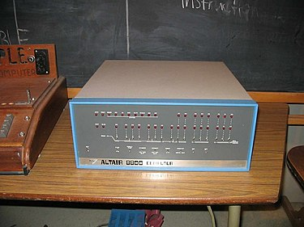
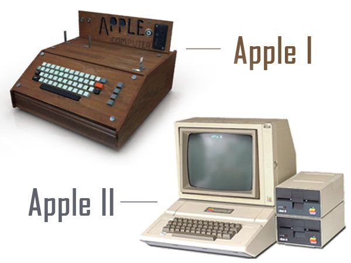

Décadas de 1970 e 1980 -PCs e Laptops e o Início da Microsoft
O Altair 8800 foi o primeiro computador desenvolvido para uso pessoal, conhecidos como Personal Computers, que foram considerados a quarta geração de inovações em computadores.
Sua interface de operação possuiam algumas chaves para controle e alguns LEDs para demonstrar o que ocorria, cabia em uma mesa comum e era muito mais rápido que os anteriores. O processador era o 8080 da Intel e foi o que proporcionou todo o desempenho.
O Software que era executado chama-se Altair BASIC, que foi produzido pelos amigos Bill Gates e Paul Allen, de forma artesanal. Após este momento Gates e Allen criaram a Microsoft.

Apple I e II - em 1976, Steve Jobs e Steve Wozniak lançaram o primeiro PC montados manualmente, o Apple I possuía uma memória RAM de 8KB e um processador de 1MHz.
Acorn (IBM PC) - em 1981 a IBM lança seu primeiro PC, que contava com o Sistema Operacional MS-DOS da Microsoft e o conjunto incluía um monitor, uma impressora, dois disquetes e adaptadores para jogos.